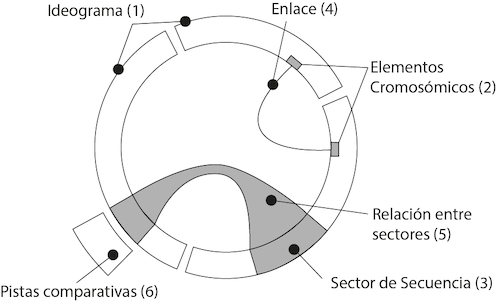
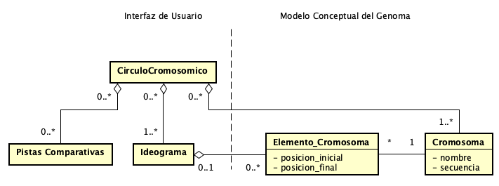
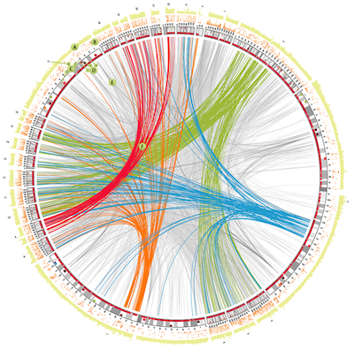

Círculo Cromosómico
Alias: Radial Table [2]
Tipo: patrón

Fig. 1 Círculo cromosómico
Problema
Visualizar relaciones entre elementos o posiciones de múltiples secuencias genómicas.
Contexto
Usuario quiere comparar dos o más secuencias genómicas (común en estudios de genómica comparativa para estudiar la conservación o sintenia), identificando relaciones de elementos o posiciones entre ellas.
Las secuencias son cantidades extensas de datos y la representación tabular no facilita la identificación de relaciones entre los datos.
Solución
La Figura 1 presenta la solución. Representar la secuencia genómica a través de ideogramas (1) dispuestos en una composición circular. Si aporta información al análisis, agregar anotaciones sobre los ideogramas a través del patrón “Pistas comparativas” (6).
Dentro de los ideogramas (1), resaltar los elementos de la secuencia que se quieren visualizar. Si existe relaciones entre elementos cromosómicos (2), o sectores de secuencia (3), dibujar enlaces (4)(5) entre ellos. Si existen varios tipos de relaciones, pintar los enlaces de cada categoría con un color o tramas diferente a la de las otras categorías.
Esquema

El patrón Círculo cromosómico se crea instanciado la clase “CirculoCromosomico”. El patrón se compone del patrón “Ideograma” (clase “Ideograma”) para representar, en una distribución circular, los cromosomas (clase “Cromosoma”) del esquema de datos del modelo conceptual del genoma. Cada cromosoma está compuesto de elementos (clase “Elemento_Cromosoma”). Por ejemplo, los genes o exones son elementos de la secuencia cromosómica que tienen su posición inicial y final dentro de la secuencia.
Los elementos o sectores de la secuencia cromosómica pueden compartir una relación de cualquier tipo (p. ej., genes participando en una misma ruta metabólica o “pathway”). Por lo tanto, por cada relación existente, dibujar un enlace o línea conectando a los elementos o sectores que comparten la relación. Si existen categorías entre las relaciones, pintar de un mismo color todos los enlaces que pertenecen a una categoría de relación. Enlaces de otras categorías tendrán un color diferente.
Patrones relacionados
Ejemplos

Fig. Visualización de CIRCOS [1].
Otros ejemplos son: GenomePixeler [4], ChromoWheel [5].
En [3] se utiliza CIRCOS para estudiar la genómica del cáncer.
Bibliografía
[2] Tidwell, J. (2010). Designing interfaces: Patterns for effective interaction design. O’Reilly Media, Inc.